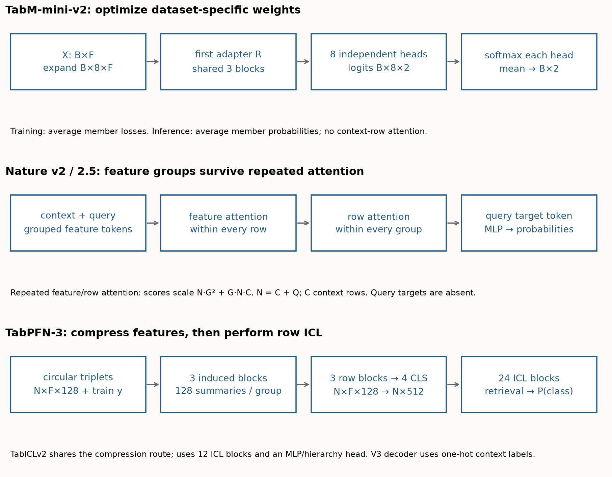
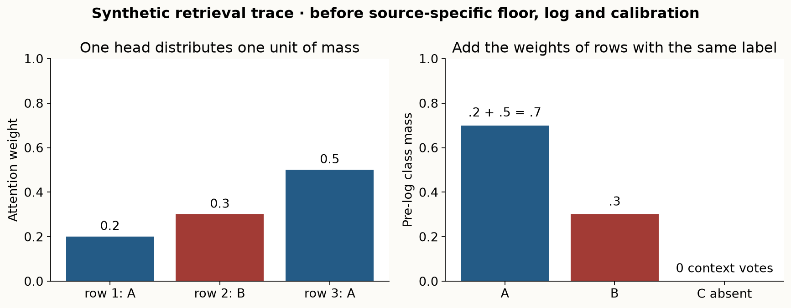
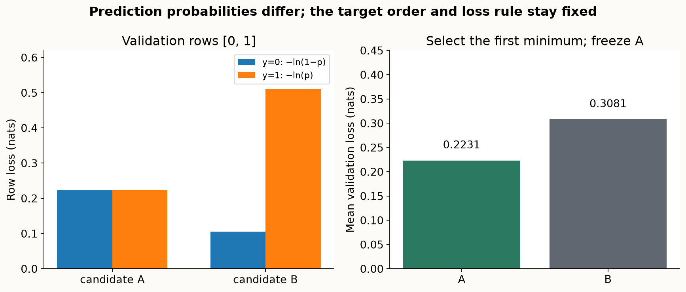
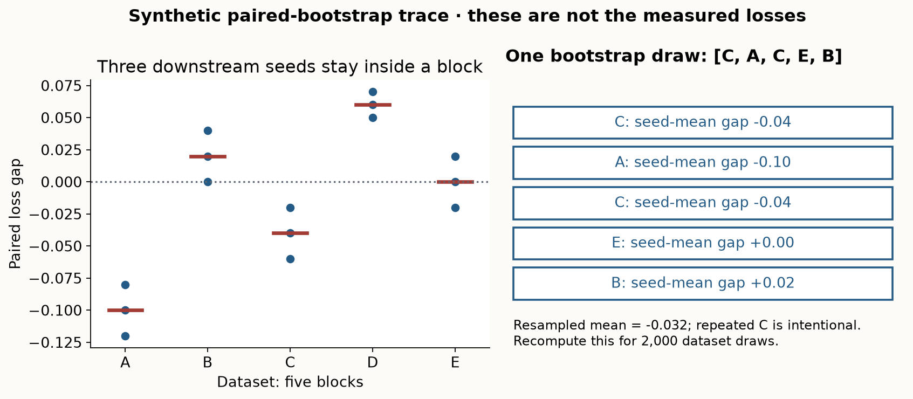
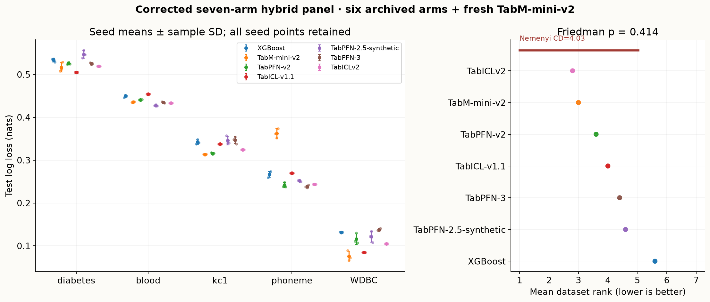
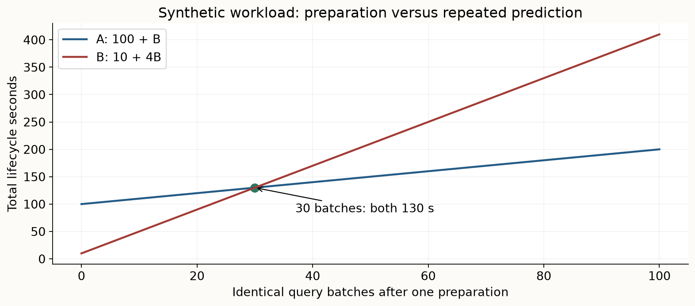
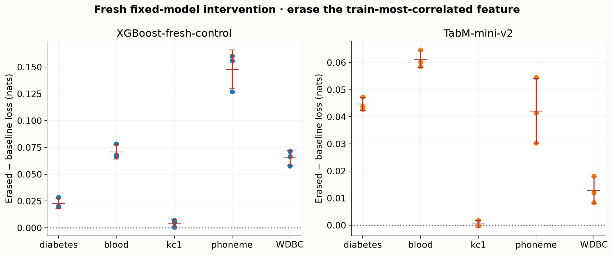

Year 2 · Quarter 3 · Lesson 070
Defend a foundation-model baseline
Retrieve before reading
The checkpoint is a decision procedure¶
Imagine defending a relational model to a skeptical reviewer. You have a new neural architecture, a convincing diagram and a higher score than a tree baseline. The reviewer asks which tree configurations you tried, whether the pretrained baseline saw the same legal history, and whether you chose your best experiment after looking at test labels. A model name cannot answer those questions. A procedure can: data availability → preparation → candidate fitting → validation selection → frozen prediction → evaluation.
Your skill in this checkpoint is to construct and defend that procedure. You will audit an existing seven-arm experiment, train a corrected neural baseline on exactly its rows, and perform a feature-loss intervention with frozen fitted models. The outcome is an executable argument about a particular prediction task, including a result that could change your recommendation. It is preparation for relational research, where information cutoffs and target identity matter at least as much as architecture.
Before reading further, retrieve three ideas without notes. Why can label-free preprocessing leak information? Why do three seeds on one split remain one dataset? Why can a classifier that supports many classes still fail to recognize an emerging class? Write a sentence for each. Revisit them after the lab's checks; recognition while reading is weaker evidence than explaining a result from your own artifact.
Reading route. Start with the TabPFN-3 report, §§2.1–2.4 and Appendix C, then compare TabICLv2 §3 and Appendix A. Read the first report's Appendices E.2–E.3 before interpreting a leaderboard. This lesson teaches their mechanisms and evaluation distinctions; it does not reproduce either report's benchmark.
Freeze what a prediction means¶
The prediction unit here is a row in a small binary table. A target is encoded as 0 or 1, and every arm returns P(y=1) in the same original test-row order. This convention is not interchangeable with “probability of the undesirable outcome.” In sklearn's breast-cancer table, class 1 means benign. The lab reconstructs the semantic label map from each raw source instead of inferring it from a model name.
A split partitions row IDs into train, validation and test. Training rows fit imputation statistics and model parameters; validation rows select candidates and neural epochs; test labels score the final choice. The local design samples at most 600 original rows without consulting labels, using sampling seed 70. It stratifies a 20% test partition with seed 70, then takes 25% of the remaining rows for validation using seed 71. Thus the approximate proportions are 60/20/20. Stratification uses targets to construct balanced partitions; those targets are not available to the model as query features.
| Dataset | Source | Original rows | Used rows | Features | Train / validation / test |
|---|---|---|---|---|---|
| diabetes | OpenML 37 | 768 | 600 | 8 | 360 / 120 / 120 |
| blood_transfusion | OpenML 1464 | 748 | 600 | 4 | 360 / 120 / 120 |
| kc1 | OpenML 1067 | 2,109 | 600 | 21 | 360 / 120 / 120 |
| phoneme | OpenML 1489 | 5,404 | 600 | 5 | 360 / 120 / 120 |
| breast_cancer | sklearn WDBC | 569 | 569 | 30 | 341 / 114 / 114 |
All five tasks are numeric binary classification. This is a useful small CPU comparison; it supplies no local evidence about mixed categorical schemas, regression, time-based splits or million-row inference. Median imputation is fitted on training rows only. Corrected TabM additionally fits a training-only StandardScaler. Pretrained wrappers retain their own released transformations after the common imputation. Common information access does not require identical model-specific preprocessing. Requiring every learner to use another model's preferred scaling could itself weaken a baseline.

Follow one test ID through the diagram. Its features can enter a frozen predictor, while its target enters only the loss function. The validation arrow selects a candidate; it never points backward from the test score. A serialized artifact should let another evaluator recover the row order, class semantics, selected candidate and probabilities. A scalar score by itself cannot expose a missing row or reversed probability column.
There are three related but different checks. Reconstructing loss from saved probabilities verifies arithmetic. Matching raw source labels to saved test IDs verifies local alignment. Reexecuting the pinned original predictor verifies that the named operator produces those probabilities. None alone proves absence of every historical development leak. In particular, development-set overlap with public benchmark tasks must be audited separately from the local split.
A checkpoint identity is larger than its family name¶
The original archive has seven arms × five datasets × three downstream seeds = 105 selected results. It remains unchanged. The primary repaired comparison also has seven arms: it replaces the legacy TabM result with 15 freshly fitted TabM-mini-v2 results and keeps the six valid archived arms. A separately labeled eight-arm diagnostic retains both TabM implementations to expose the effect of the repair. Ranks belong to their declared pool; they are recomputed for each pool.
| Arm in the primary comparison | Operator identity | Evidence origin |
|---|---|---|
| XGBoost | Recorded historical version, 100 trees; validation selects depth 3 or 6 | Archived probabilities |
| TabM-mini-v2 | Corrected independent numeric implementation; k=8, width 64, depth 3 | Fresh fits |
| TabPFN-v2 | tabpfn 2.0.9; Nature classifier f65a3568… |
Archived one-estimator inference |
| TabICL-v1.1 | tabicl 0.1.4; May v1.1 checkpoint cd0296d7… |
Archived one-estimator inference |
| TabPFN-2.5-synthetic | tabpfn 8.5.0; v2.5_default-2, 2d0fbd25… |
Archived one-estimator inference |
| TabPFN-3 | tabpfn 8.5.0; v3_default, d0d865d5… |
Archived one-estimator inference |
| TabICLv2 | tabicl 2.2.0; February 2026 classifier bdc7dbd5… |
Archived one-estimator inference |
The complete filenames, immutable model revisions, full SHA256 digests, package wheels and source files are in the source ledger. A package can support several learned models. The TabICL-v1.1 arm here is not the earlier February TabICL checkpoint studied in lesson 066. Likewise, synthetic TabPFN-2.5 is not Real-TabPFN-2.5, which has an additional real-data training history; the 2.5 report distinguishes them explicitly. Comparing either one's number under the other's name would change the scientific claim.
A downstream seed means different things. It changes neural initialization and minibatch order for TabM; it changes subsampling in XGBoost; it can change permutations and transformations around a fixed pretrained network. Three such seeds do not create three independently pretrained TabPFNs. The fixed split also leaves split uncertainty unmeasured.
The legacy arm called TabM-mini had an extra first-layer output adapter, per-member backbone biases and incorrect fan-in initialization. It remains an identifiable historical neural variant, but is not accepted as the paper's mini architecture. Corrected results are versioned, not pasted over old predictions. The fresh XGBoost fits form an additional replay control and a paired intervention control; they do not become a second XGBoost opponent in the primary rank table.
Compare where each architecture spends its work¶
No new model is introduced for implementation in this checkpoint. Instead, trace the connected prediction paths you are evaluating. A trained tree or TabM carries a dataset-specific mapping in fitted parameters. A pretrained in-context learner carries a cross-task mapping in frozen parameters and conditions on labeled rows supplied at inference. Its fit method need not perform gradient updates to incur substantial work: it can prepare transformations, embeddings or attention caches.
Corrected TabM-mini. For a batch X with B rows and F features, expand to B×k×F, multiply by a first trainable member adapter R, and apply shared Linear → ReLU → Dropout blocks. Mini has no output adapter S and uses shared backbone biases. Independent heads return logits B×k×2. During training, average each member's cross-entropy; at inference, average member probabilities. If two members give P(y=1)=0.9 and 0.1 on a positive row, the training loss is (−ln 0.9−ln 0.1)/2=1.204 nats, while ensemble prediction is 0.5 with loss 0.693. Averaging logits or training only the averaged prediction changes the computation. This is the TabM §3.3/§5.1 distinction the provided model retains.
Nature TabPFN-v2 and TabPFN-2.5. Features form grouped tokens alongside a target token. Alternating attention mixes features within rows and rows within feature groups. The feature axis remains present through repeated blocks. For N = C + Q total rows, C context rows and G feature groups, the masked attention-score work contains terms proportional to NG² and GNC, apart from widths and heads. Query rows read context rows, so at fixed C the row-attention term grows linearly with Q. It becomes quadratic in N when context remains a fixed fraction of total rows. The v2 classification network studied in lessons 064/069 has twelve blocks, dimension 192 and six heads. The loaded synthetic 2.5 classifier has 24 blocks, dimension 192, three attention heads and feature groups of size 3; its report additionally describes 64 learned thinking rows. A richer or deeper checkpoint changes learned behavior; a later release number alone does not tell you which inference recipe ran.
TabICL and TabICLv2. Column embedding first collects distributional information through a small set of inducing vectors. Row interaction compresses feature tokens into a fixed number of CLS summaries. Dataset-wise attention then acts on row embeddings. This removes the feature multiplier from the later NC attention term, while the column and row stages still cost computation. TabICLv2 adds repeated feature groups, early target-aware embeddings and query-aware attention scaling. Its Appendix A.3 combines mixed-radix target encoding with hierarchical classification beyond the native output classes; that is a different many-class mechanism from TabPFN-3's retrieval head.

TabPFN-3 connects these ideas. The report and released 8.5.0 source describe three stages. First, form F circular feature triplets and embed each into dimension 128; targets are added only to training-row cells. Three inducing-attention blocks with 128 inducing vectors summarize distributions. Second, three feature-interaction blocks use four CLS tokens per row. Concatenation yields a 4×128=512-dimensional row embedding. Third, 24 ICL blocks pass information from context rows to query rows. The classifier ends in a six-head retrieval decoder. The source adds RMSNorm, missing-value indicators and checkpoint-specific label embeddings. These are connected components, not interchangeable labels for “attention.”
Repeated grouping preserves F groups rather than simply dividing the feature count by three. The TabICLv2 pattern uses offsets (0,1,3) modulo F: with five columns [a,b,c,d,e], the group anchored at a is [a,b,d], and the group anchored at e is [e,a,c]. This example names a group by its first selected feature. Both released implementations index source offsets as (1,2,4) from the output-group index; relative to the first selected feature these are (0,1,3). Thus [a,b,d] is output group 4 in the five-column array, not group 0. Features participate in several local groups. Early target embeddings can distinguish columns with similar marginal distributions but different associations with y. Query labels remain absent: adding a train target to every training cell does not authorize adding the answer to a query cell.
Attention fading. Suppose one relevant row has score 2 and n−1 distractors have score 0. Its attention mass is exp(2)/(exp(2)+n−1): approximately 0.451 for n=10 but 0.00734 for n=1,000. More eligible rows can dilute useful evidence. QASSMax scales query coordinates using a learned function of log context length multiplied by a bounded, query-dependent gate. The gate is 1+tanh(MLP(q)), in (0,2); the base scale is learned too. This is not a guarantee that adding context improves accuracy, nor simply the ordinary 1/√head-dimension factor. The TabICLv2 §3 ablation motivation and released SoftmaxScalingMLP make that distinction explicit.
More supported classes does not invent unseen labels¶
For a query, the TabPFN-3 decoder projects its final embedding to a query vector and the training embeddings to keys. Softmax over training-row similarities produces nonnegative weights α that sum to one. The values are one-hot training labels. For each head, sum α times these values; average heads to get class mass. The implementation then applies a small floor/offset before log conversion, followed by wrapper postprocessing. The following arithmetic isolates the pre-log voting stage, not final calibrated package probabilities.

Let context labels be [A,B,A] and attention weights [0.2,0.3,0.5]. A receives 0.2+0.5=0.7; B receives 0.3. Adding a possible output label C without any C-labeled context row contributes no C vote. Numerically flooring logits cannot supply semantic evidence about C. This reconnects lesson 069's emerging-class failure with a newer architecture: increasing supported class cardinality and identifying a never-observed class are different tasks.
The decoder's parameterization does not require one learned output weight per class. Yet the released checkpoint still has a 160-class ceiling through its target-embedding and decoder configuration (max_num_classes=160 in the loaded v3_default checkpoint, also used by its wrapper support checks). “Non-parametric in class count” describes the retrieval computation; it does not mean the whole trained system has unlimited classes. See TabPFN-3 §2.2 and Appendix C. The binary local panel cannot measure the claimed many-class advantage.
Likewise, the report's size envelope lists alternative regimes: 1 million rows × 200 features, 100,000 × 2,000, or 1,000 × 20,000. It does not certify 1 million × 20,000. Row streaming computes inducing summaries once over the full context, then reuses those summaries across row chunks. Recomputing an unrelated summary inside each chunk changes the algorithm. The saved 114/120-query CPU calls do not exercise that million-row memory regime.
Derive the metric and make selection reconstructible¶
Binary log loss is the mean negative log probability assigned to the observed label. For row i, let pᵢ=P(yᵢ=1). The contribution is −yᵢ ln pᵢ−(1−yᵢ)ln(1−pᵢ). Natural logarithms give units called nats. Confident wrong predictions receive large penalties, so loss tests probability quality beyond thresholded accuracy. The implemented evaluator checks shape, finiteness, range and binary targets before clipping exact endpoints at float64 machine epsilon.
For y=[0,1], candidate A predicts [0.2,0.8]. Both rows contribute −ln 0.8 and validation loss is 0.2231. Candidate B predicts [0.1,0.6]; its loss is (−ln 0.9−ln 0.6)/2=0.3081. A wins validation. Even if B later has a lower test loss, switching to B would turn the test into another validation set. Record that counterfactual for diagnosis only if the protocol allows it; do not deploy its “test-selected” score as unbiased evidence.

A candidate is a declared recipe, not just a final network. Here XGBoost tries depths 3 and 6 with learning rate .05 and 100 trees. Corrected TabM tries learning rates .001 and .003 for 24 epochs, k=8, width 64, depth 3 and dropout .1. At each epoch, compute ensemble validation loss and keep the last epoch at the minimum, matching the explicit stopping policy. Across the two candidate recipes, choose the first minimum. The two tie rules concern different axes and are recorded separately.
The new artifact saves every candidate's selected validation probabilities, all epoch losses, selected epoch, fitted-weight digest and preprocessing statistics. A checker can recompute each selected validation loss and recover both choices. The old archive contains validation loss scalars and selected indices but no validation probabilities. Its argmin replay is useful, but by itself cannot verify that those losses were calculated from the declared validation rows. Separate original-package replay evidence is needed for that stronger claim.
Equal candidate counts would still not imply equal tuning cost. The archived pretrained arms used one estimator/recipe, while the fitted baselines chose between two recipes and TabM additionally chose an epoch. This is a deliberately small comparison of specified downstream procedures. It is not a search-budget-matched reproduction of TabArena's tuning and ensembling machinery.
Choose the statistical unit before calculating uncertainty¶
Start with the per-dataset seed points and loss gaps. For arm a versus XGBoost on dataset d and seed s, Δ[d,s]=loss[a,d,s]−loss[XGBoost,d,s]. Negative values favor a. Pair by dataset and declared downstream seed; never subtract unrelated rows. The main table reports seed means and sample standard deviations, which describe this limited source of variation. A t interval from three seeds would have only two degrees of freedom and still condition on this fixed split. It would not cover different datasets or pretraining histories.
For the primary rank summary, average seeds inside each dataset, rank those means with smaller loss better and average ranks across the five datasets. A tie gets the average occupied position. This protects each dataset's weight from the number of repetitions. It does not make the five convenience-selected public tables a random sample of deployment tasks.
Order matters. Suppose A has seed losses [0.1,0.1,1.0], while B has [0.2,0.2,0.2]. A wins two of three seed-wise contests, so its average seed rank is better. But A's mean loss is 0.4 and B's is 0.2; ranking the means favors B. The lesson uses the latter operator. The TabPFN-3 TALENT appendix ranks each dataset/split pair before averaging, a different experimental design. Never call the two statistics identical.
The paired bootstrap first averages Δ within each dataset, then draws five dataset indices with replacement for each replicate and averages the selected differences. All model/seed pairs from a selected dataset move together. The 2.5th and 97.5th percentiles of 2,000 replicate means form an empirical interval. It describes resampling this five-dataset collection, with considerable small-sample limitations. It cannot justify a population-wide guarantee or turn 15 repeated runs into 15 independent datasets.

The exploratory Friedman test asks whether dataset-level ranks differ beyond its null model. The Nemenyi critical difference is a multiple-comparison threshold in rank units, computed for the declared number of models and datasets. It is not a confidence interval around a log loss. With only five datasets, a visually ordered rank plot can easily fail to resolve pairwise differences. A non-significant test is not evidence of equivalence; an equivalence claim would require a meaningful tolerance and a design capable of testing it.
Read the measured comparison before recommending a model¶
Before revealing the table, predict which quantity can change when a new opponent is added: an existing probability, an existing loss, or its rank. Then predict whether correcting an implementation must improve its test score. The latter prediction should make you uncomfortable: correct mathematics removes a fidelity error, not the randomness and task dependence of empirical performance.
| Dataset | XGBoost | TabM-mini-v2 | TabPFN-v2 | TabICL-v1.1 | TabPFN-2.5-synthetic | TabPFN-3 | TabICLv2 |
|---|---|---|---|---|---|---|---|
| diabetes | 0.5336 ± 0.0044 | 0.5162 ± 0.0109 | 0.5256 ± 0.0028 | 0.5053 ± 0.0000 | 0.5469 ± 0.0092 | 0.5253 ± 0.0020 | 0.5192 ± 0.0000 |
| blood_transfusion | 0.4494 ± 0.0029 | 0.4356 ± 0.0008 | 0.4405 ± 0.0013 | 0.4540 ± 0.0000 | 0.4277 ± 0.0016 | 0.4351 ± 0.0018 | 0.4333 ± 0.0000 |
| kc1 | 0.3424 ± 0.0055 | 0.3134 ± 0.0007 | 0.3157 ± 0.0018 | 0.3375 ± 0.0000 | 0.3457 ± 0.0099 | 0.3466 ± 0.0080 | 0.3240 ± 0.0000 |
| phoneme | 0.2667 ± 0.0069 | 0.3623 ± 0.0111 | 0.2416 ± 0.0060 | 0.2700 ± 0.0000 | 0.2517 ± 0.0017 | 0.2382 ± 0.0035 | 0.2434 ± 0.0000 |
| breast_cancer | 0.1315 ± 0.0012 | 0.0758 ± 0.0117 | 0.1159 ± 0.0123 | 0.0849 ± 0.0000 | 0.1213 ± 0.0129 | 0.1376 ± 0.0028 | 0.1047 ± 0.0000 |
Test log loss, mean ± sample SD over three downstream seeds. Six archived arms plus fresh corrected TabM. Smaller is better; fixed split and restricted procedures.

Measured outcome. TabICLv2 has the smallest mean dataset rank (2.80) in the corrected seven-arm pool. The exploratory Friedman p-value is 0.414; the Nemenyi critical difference is 4.03 rank units. These summaries do not resolve a general winner from five fixed small tables.
The fresh XGBoost replay control differs from its archived test probabilities by at most 0. This verifies that control under the recorded local recipes; its wall-clock cost is a new observation. The 30 fresh selected fits retain 60 candidate validation probability vectors and 720 neural epoch losses.
The feature-erasure prediction is supported at the dataset-average level: XGBoost-fresh-control: mean loss increase +0.0622 nats, 0 of 15 seed cases improve, TabM-mini-v2: mean loss increase +0.0322 nats, 2 of 15 seed cases improve. Every negative case stays in the evidence. A mean degradation does not imply all rows or datasets degrade.
The corrected-minus-legacy TabM mean-loss differences are diabetes +0.0058, blood_transfusion -0.0015, kc1 -0.0052, phoneme -0.0260, breast_cancer +0.0057. Correcting paper fidelity is not a promise to improve every held-out score.
The corrected main panel deliberately combines fresh TabM fits with archived, independently scoreable probabilities from the other six procedures. That supports a hybrid local comparison on the frozen rows. It is neither seven fresh training runs nor a comparison under one contemporaneous software environment. The original seven-arm and eight-arm diagnostic summaries remain available in the result JSON. A version repair should preserve its counter-evidence as carefully as its favorable outcomes.
Measure lifecycle cost, then stress one information source¶
Let F be preparation plus candidate-selection seconds and P the seconds for the declared prediction batch. For B repeated batches on an unchanged context, a simple workload model is C(B)=F+BP. A procedure costing F=100, P=1 ties one costing F=10, P=4 at B=30. For fewer batches the lower preparation cost wins; for more batches the lower per-batch cost wins. This is a workload calculation, not a measurement of caching behavior the runner did not execute.

Keep download, checkpoint loading, common data preparation, model-specific preparation, candidate validation and selected test prediction boundaries explicit. The local timers include candidate fitting and validation, then one selected prediction call. Common loading/imputation is excluded. Archived pretrained fit may defer work into predict; its preparation timer therefore need not be directly comparable to a cache-building deployment fit. The times were collected on a shared CPU host and cannot establish controlled hardware efficiency.
The source reports use larger protocols. TabPFN-3's TabArena evaluation includes eight-fold bagging for fit-time cross-validation and a full-training refit; its 816 tasks span 51 datasets. Binary TabArena scores use AUROC, multiclass uses log loss and regression uses RMSE. Its TALENT comparisons use accuracy for classification and RMSE for regression, with 26 development datasets excluded from the main slice. Our five binary log-loss tasks use neither complete protocol. Elo, rank and relative error summaries from those sources should not be spliced into this local loss table. See Appendices E.2–E.3.
Now test a specific information dependency. For each dataset, compute the largest absolute Pearson correlation with the target using training rows only. Pearson correlation measures centered linear association normalized by the feature and target scales. Exact ties choose the first feature. Replace that feature in every test query with its training median. Freeze the selected model, all other query values, row IDs and targets. Run the same intervention for fresh XGBoost and corrected TabM. The prespecified prediction is that dataset-average log loss increases for both; a failed prediction belongs in the report.

This is an information-loss stress test, not a causal feature-importance estimate or an estimate of every missing-data mechanism. A high univariate correlation can be redundant with another feature; a noisy association can harm a small fitted model, so erasing it can improve held-out loss. Median replacement does not mean the deployed model learned how to use a newly missing sensor. Selecting the erased feature by the largest observed test degradation would answer a more adaptive question and would need separate validation. Retraining after deletion would answer another question again: whether the remaining features can compensate after adaptation.
Turn the evidence into a relational research handoff¶
Specify an entity, prediction time t, horizon h and target. For a future customer task, legal information might include interactions and linked account events timestamped before t, with labels available before t. A strong aggregate baseline can use counts, recency, sums and prior outcomes constructed from that legal history. A relational model may preserve typed links, sequence structure or interactions discarded by those aggregates. Compare this concrete information representation while holding target rows, horizon and selection policy fixed.
The TabPFN-3 relational section is useful precisely because it distinguishes claims. It reports TabPFN-REL as strongest among the compared relational foundation models, while RelGNN remains stronger overall on its aggregate metrics. It also flags results under potentially different data regimes. An RFM ranking is not a claim that every relational foundation model beats supervised relational learning. The section's RDBLearn comparisons also identify early checkpoint variants; our binary v3_default archive does not reproduce those results.
A defensible handoff might predict: preserving the order of recent linked interactions improves a future-window metric over a legal aggregate table when the label depends on event order. The discriminating intervention shuffles order while preserving entity membership and counts, with tuning frozen before the test window. If the aggregate table plus a deployable pretrained learner matches the relational model within a prespecified practical margin at lower measured cost, that is evidence against needing the extra structure in this regime. Preserve it rather than replacing the task after seeing the answer.
EXIT: defend what your artifact actually establishes¶
The notebook provides the corrected TabM architecture and full bounded training loop visibly. You implement six live operations: probability loss, validation choice, complete-panel aggregation, dataset bootstrap, lifecycle cost and feature erasure. These definitions are called by the actual experiment. CHECK cells test error cases and invariants, not only happy-path values. Your final JSON binds the data/archive identities, candidate traces, predictions, intervention, current code dependency graph and written interpretation.
Submit a recommendation for one declared use case, one counterexample to a broad winner claim and one falsifiable relational follow-up. Separate what you implemented, what you freshly fitted, which checkpoint predictions you audited, what independent replay verified and what remains unrun. The post-EXIT route increases the local fitting budget using the same visible code; a larger local preset does not become a reproduction of full pretraining or the original benchmark. The reproduction contract gives the executable routes and the protocol work still needed.
Ask the tutor to challenge your weakest link: row identity, validation independence, model fidelity, uncertainty, cost or transfer. Completion is a submitted and defended argument. Merely running the cells does not establish personal mastery.